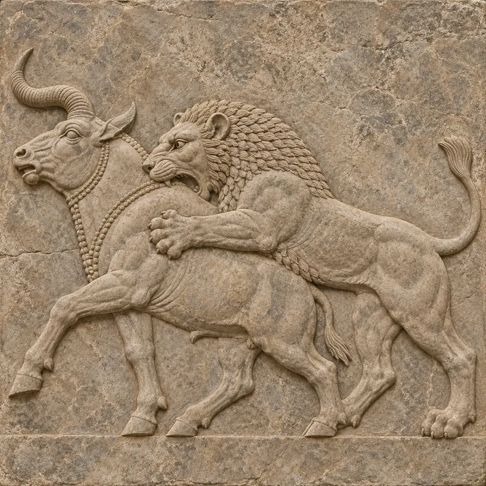
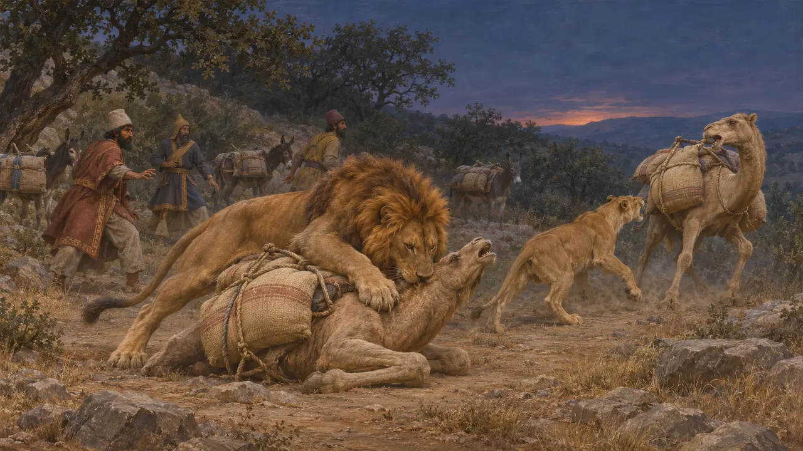
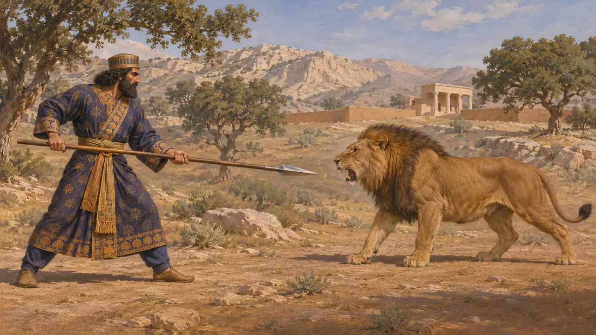
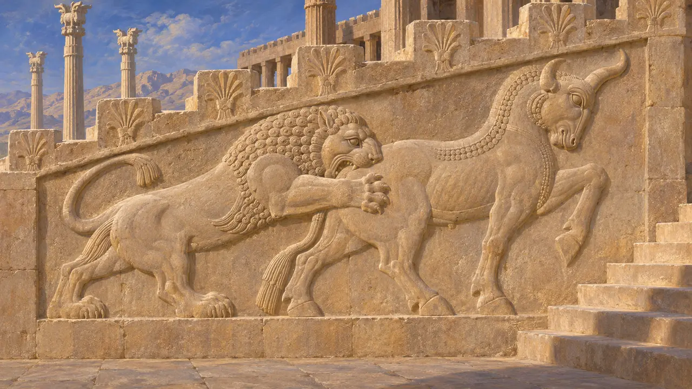
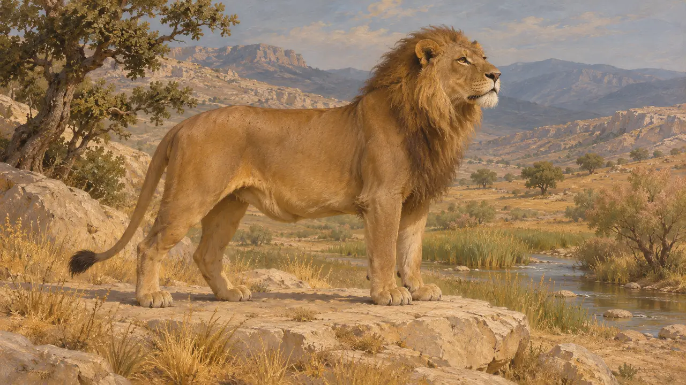
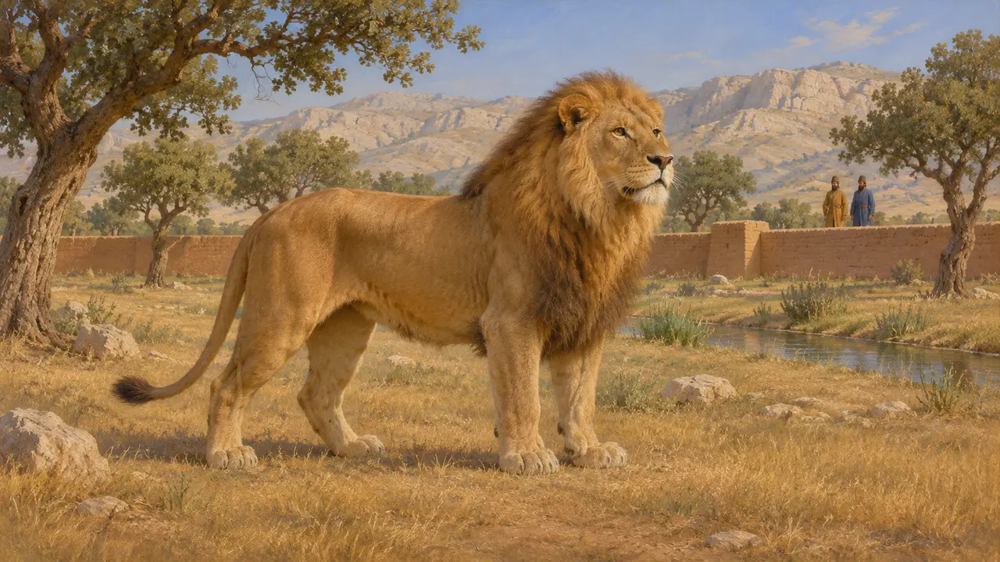

ライオンはアケメネス朝の時代に近東に生息しており、ヘロドトスは北ギリシアにもいたとしている。印章や宮殿美術には、王がライオンを狩り、打ち倒す姿が描かれ、王権の象徴となっている。ヘロドトスによれば、ネストス川とアケロオス川のあいだの行軍中、ライオンがクセルクセスの荷を運ぶ駱駝を襲った。
ゲームでは： アトス、パールサ、パサルガダエ、スーサの各ステージには、背景としてライオンが描かれている。ペルシスとトラキアでは丘の上に、エラムでは湿地の縁にいる。ルールには一切関係しない。これらの配置は制作者の選択であり、記録に残る分布域ではない。

クセルクセスの行軍とライオン
古代の記述ヘロドトスによれば、ネストス川とアケロオス川のあいだを進軍していたとき、夜になると獅子が下りてきて、軍の食料を運ぶ駱駝を殺したという。獅子は人にも他の荷役獣にも手を出さなかったので、不思議に思ったと彼は付け加えている。獅子はヨーロッパのこの一帯にしかおらず、野牛も同じ地域にいたと述べている。
Herodotus 7.125-126

印章に見る王の獅子狩り
同時代の記録ペルセポリスの印章と封泥には、ペルセポリス要塞文書板に残る印影も含め、ライオンを狩る、あるいはライオンと戦う王者の姿が表されている。現代の研究者は、この場面を、王が野獣から民を守る保護者として振る舞う姿と読み解く。これらの図像は当時のものだが、描かれているのは理想像であり、特定の狩りの記録ではない。
M. Garrison and M. Root, Seals on the Persepolis Fortification Tablets, 2001

宮殿美術のライオン
同時代の記録ライオンはスーサの宮殿の彩釉煉瓦の装飾に現れ、ペルセポリスではアパダナに、牡牛に襲いかかるライオンが表されている。こうした図像は動物を力の象徴として用いたものであり、建物の近くに実際のライオンがいたことを示すものではない。
P. Briant, From Cyrus to Alexander, 2002

ペルシスとエラムのライオン
係争中ライオンはイラン南西部で近年まで生き残っていたため、紀元前6世紀にはペルシスやエラムにも生息していたと思われる。直接の報告は史料にほとんどなく、数や分布は確定できない。また、王のライオン狩りがどこまで実際の狩猟で、どこまでが演出だったかについても、歴史家のあいだで議論がある。
P. Briant, From Cyrus to Alexander, 2002

王の管理下で飼われたライオン
係争中クセノポンは、小キュロスが所有した獲物であふれる園、パラダイスについて記しており、後のギリシア人著述家も王の狩猟園を describe している。ダレイオスやクセルクセスの時代にそうした園でライオンが飼われていたかどうかは、証拠からは明らかでない。近代の多くの研究者は、王のライオン狩りの図像は、やはりライオン狩りを記録させたアッシリアの王たちに負うところがあると見ている。
Xenophon, Anabasis 1.2
出典
- Herodotus 7.125-126
- P. Briant, From Cyrus to Alexander, 2002
- M. Garrison and M. Root, Seals on the Persepolis Fortification Tablets, 2001
- Xenophon, Anabasis 1.2